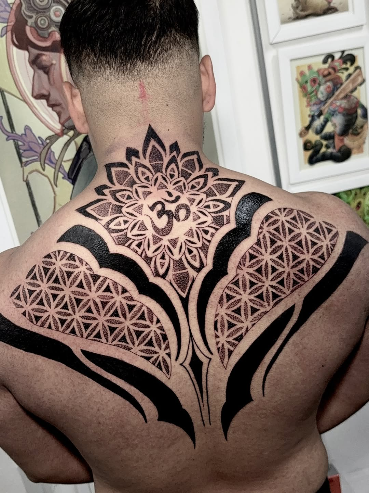

El Artista

Filosofía
Para mí, tatuar no es solo un oficio — es un acto devocional. Cada línea trazada sobre la piel es una oración silenciosa, cada sesión un ritual compartido entre artista y portador.
Me especializo en neo-japonés, ornamental y geometría sagrada. Mi trabajo vive en la escala monumental: espaldas completas, mangas que envuelven el cuerpo como armaduras sagradas, piezas de cuello y pecho que transforman la anatomía en arquitectura viva.
Mis influencias beben de las máscaras Hannya del teatro Noh, la simetría ritual de los mandalas tibetanos, y la precisión matemática de la geometría sagrada. Trabajo exclusivamente en negro y gris, encontrando en la ausencia de color una profundidad que el espectro completo no alcanza.
Cada proyecto comienza con una conversación profunda. No tatúo diseños — tatúo intenciones. Creo que el cuerpo es un lienzo sagrado que merece respeto absoluto, y que cada marca permanente debe nacer de un lugar de significado auténtico.
Mi Proceso
Conversamos sobre tu visión, intención y la historia que quieres portar en tu piel.
Creo un diseño personalizado que respeta la anatomía de tu cuerpo y fluye con tu forma natural.
La sesión de tatuaje es un espacio sagrado — concentración, respeto y devoción absoluta al oficio.